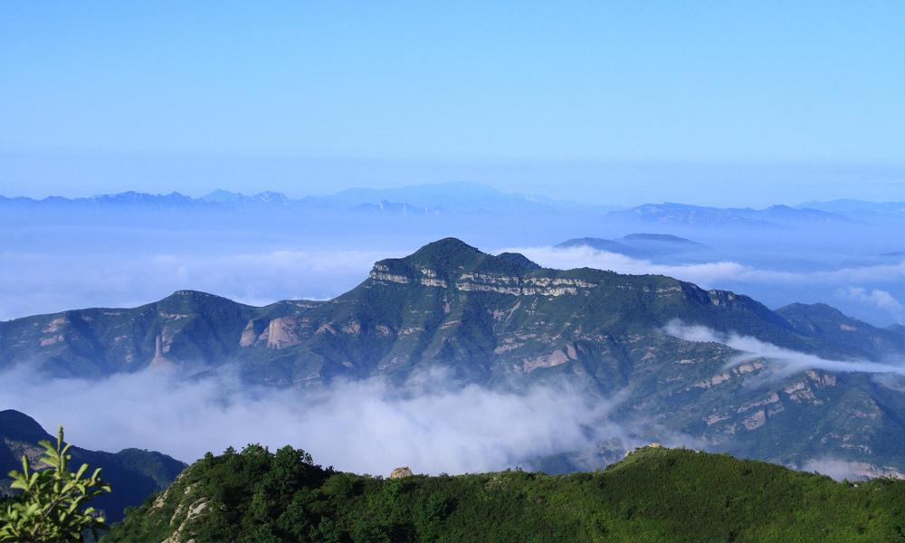
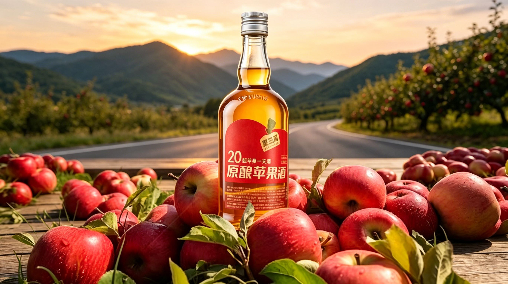
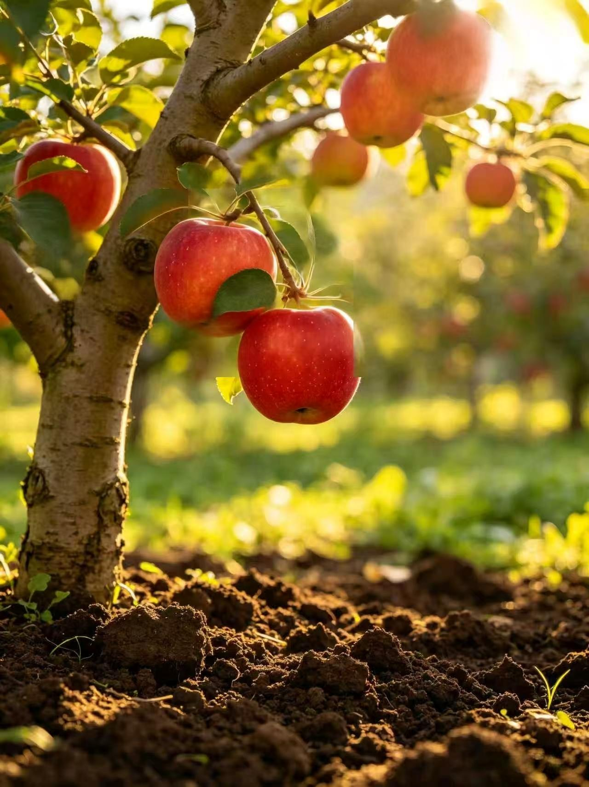

果、酒、旅：
三位一体的生命哲学
承德果三两，深植于燕山南麓的沃土。我们不仅酿造美酒，更在创造一种连接人与自然的当代生活方式。通过生态保护、工艺创新与文化溯源，我们将每一颗国光苹果的灵魂，转化为杯中流动的诗意。
history_edu
文化
国光百年传承
science
工艺
精准发酵技术
eco
生态
燕山有机种植
风土
风土：大地的馈赠
01
燕山日照
每年2600小时的充沛日照，为果实积攒了超越常规的糖分与果酸比例。
02
巨大昼夜温差
滦河河谷的独特微气候，逾16℃的昼夜温差，使国光苹果拥有极佳的硬度与风味厚度。
03
有机矿物土
富含矿物质的砾质壤土，给予了酒液一种独特的山地矿物感，这是工业酒精无法复刻的印记。

沉浸式庄园之旅
不只是品酒，更是一次穿越果园、工厂与历史的文化巡礼。在滦河之畔，重新发现自然的味道。
grocery
了解鲜果 →
国家地理标志产品
承德国光苹果 · 当季直发
无套袋自然着色 · 昼夜温差造就极佳风味
下一篇章
下一站：
下一站：
山杏花开的预演
燕山的春天属于山杏。我们正在研发全新的「山杏酒」系列，通过野山杏特有的单宁与酸度，重塑山间春日芬芳。敬请期待。
正在研发中
冀承果创 · 第二核心产品
了解更多 →
杏子酒（正在研发中）
燕山山脉野生山杏，生长于海拔600米以上的向阳坡地，果实积累了极高的天然糖分与馥郁果香。我们将山杏鲜榨原汁与国光苹果汁结合，低温发酵，让两种燕山风土的馈赠在杯中相遇。
杏子的浓郁饱满，苹果的清爽支撑——这是一款属于燕山的果酒，也是冀承果创走向下一个时代的第一步。
原料
燕山野生山杏汁 × 国光苹果汁
工艺
双果汁调配 · 低温发酵
风味
杏香浓郁 · 花香 · 清爽果酸
状态
首批即将面世
邀您共话燕山风土
无论是商业合作、媒体咨询，还是庄园参观预约，我们都期待您的垂询。